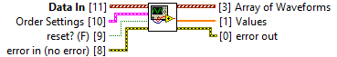
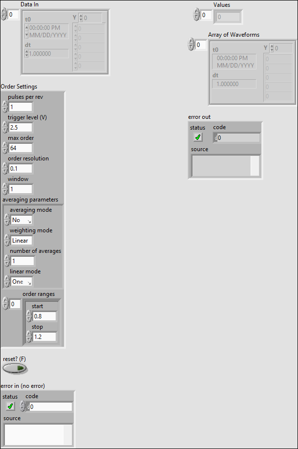
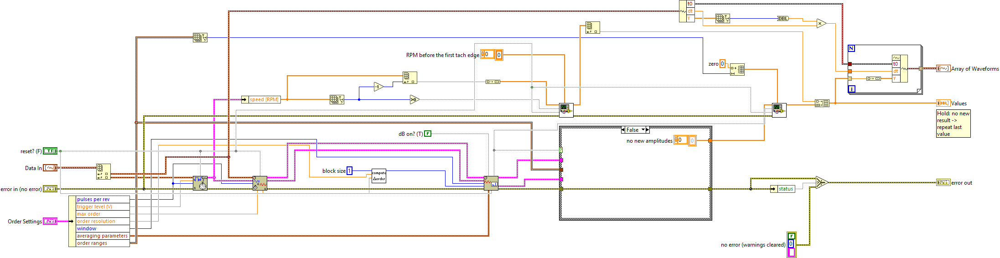
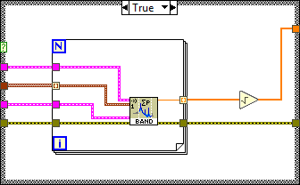

RPM and order amplitudes for the FlexLogger plug-in Process.vi (order tracks: plot them against RPM on an XY Graph). Same S&V steps as the shipping example Order Power Spectrum (Analog Tach, DAQmx).vi, with the DAQmx Read replaced by Data In.
Data In = Read 1D Wfm (DBL)_v2 data: element 0 accelerometer (g), element 1 analog pulse tach (V).
Steps: OAT Analog Tacho Process -> RPM (last tach speed point of the block); OAT Convert to Even Angle Signal; OAT Order Power Spectrum; SVFA Power in Band for each order range (sqrt -> g rms).
Array of Waveforms (to Write 1D Wfm, Auto Calculate T0 = TRUE), one 1-point waveform per channel, t0 = block t0, dt = block length: RPM, then one order amplitude (g rms) per order range. Values are held between spectra so every channel is written every block; amplitudes are 0 until the first spectrum after reset.
reset? restarts the tach processing, resampling and averaging - wire TRUE on the first Process call after Configure Session.



